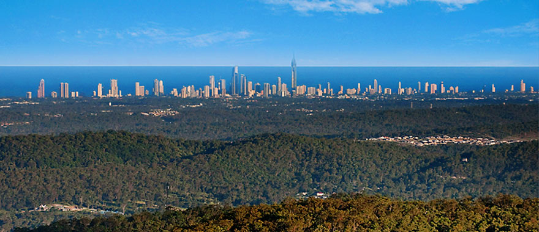

Queues, Modelling, and Markov Chains: A Workshop Honouring Prof. Peter Taylor
We are delighted to announce a workshop on queues, modelling and Markov chains is being held in honour of Peter Taylor, June 28 - 30, 2019 at the Eagle Heights Mountain Resort, Mount Tamborine, Queensland. This workshop precedes the
20th INFORMS Applied Probability Society Conference being held in Brisbane, Australia, July 3 - 5, 2019.
Details of organised transport:
- At 2:00 pm on Friday 28 June, the bus will leave from Chancellor's place bus terminus at The University of Queensland. (Please note there are two bus terminuses at the university.) The bus company is Sunstate Charters Pty Ltd.
- At 2:15 pm, the bus will then arrive at Roma Street Bus Station. The bus will depart from the bus zone opposite the Queensland Police Station, 200 Roma Street shortly afterwards. Then we will drive to Eagle Heights and arrive at about 4:00 pm. The bus will have drop-offs at Hilltop on Tamborine, Eagle Heights Mountain Resort, and then Tambaridge Bed and Breakfast.
- At 11:00 am on Monday 1 July, the bus will depart Hilltop on Tamborine, then have pickups at Eagle Heights Mountain Resort and Tambaridge Bed and Breakfast.
- On the return journey, we will stop off at Daisy Hill Koala Centre at 12 noon for about an hour. At approximately 2:00 pm, we will arrive at Roma Street Bus Station. The bus will then continue on to Chancellor's place at The University of Queensland.
The workshop will start with a Cocktail party in the evening of Friday 28 June. So, we expect all the participants to be at the workshop venue or in Brisbane by Friday noon.
Please note that the workshop is being held in the high season and accommodation options will become limited as we approach the workshop dates.
There will be some limited travel funding support provided by
ACEMS and the
School of Mathematics and Statistics at The University of Melbourne). If you need this support please visit the
registration page.
Female mathematicians at Australian institutions also have the option of applying for
AustMS WIMSIG Cheryl E. Praeger travel awards. The deadline for the first award round of 2019 is April 1.
Organizing Committee
This workshop is by invitation; however, if you have not received an invitation email and would like to attend, please contact Azam.
Contact
For more information please email: Azam Asanjarani.